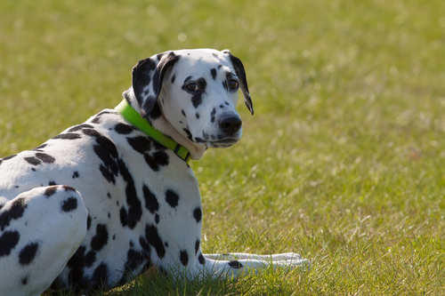

| דף ראשי | גזעים | מחלות | רקעים ותמונות | סקר | צרו קשר |
|---|
| קוקר ספאנייל |
| סמוייד |
| שפיץ יפני |
| פומרניאן |
| פודל |
| דני ענק |
| דלמטי |
| רועה גרמני |
| רועה קווקזי |
| רועה בלגי |
| בולדוג אמריקאי |
| בולדוג צרפתי |
| בולדוג אנגלי |
| צ'או צ'או |
| שיצ'ו |
| אמסטף |
| פינצ'ר |
| רוטווילר |
| דוברמן |
| האסקי סיבירי |
דלמטי
מידע נוסף
הגזע המנוקד היחידי בעולם. הכלב הדלמטי מאד חכם, מהיר, אקטיבי ובעל סיבולת גבוהה. ל"כלב הכרכרות" מסורת ארוכת ימים המבוססת על חריצות ועבודה קשה, בשילוב עם אופיו הרגיש והנאמן, הוא מתאים למשפחה, שמירה, מופעים ועוד. מזוהה בארה"ב ככלב מכבי אש, לדלמטי מאפיינים הדומים לשל סוסים, שכן הוא מאד מהיר, זקוק לפעילות פיזית רבה ביומיום וידוע בעצמאותו.
דלמטי - מקור הגזע והסטוריה
במשך שנים רבות מתנהלים ויכוחים בנוגע למוצאו של הדלמטי. בניגוד לדעה הרווחת, אין כל הוכחה לכך שהמנוקד הגיע מדלמטיה. ציורים של כלבים מנוקדים הרצים ליד כרכרות נמצאים בקברים מצרים עתיקים. כמו כן יצירות אומנות מ-1360 הכוללות כלבים מנוקדים יושבות בכנסיית סנטה מריה שבאיטליה. הדלמטים שימשו בין היתר כלבי ציד, גישוש, מלחמה ואף שמירה על גבול דלמטיה- קרואטיה. תפקידו העיקרי של המנוקד היה לרוץ לצד כרכרות ,מכאן הזיקה והדמיון לסוסים. אם יש לכם בגינה יותר משני כלבים דלמטיים יש שיגידו שיש לכם חוות סוסים קטנה.
דלמטי - נתונים ומאפיינים
דלמטים נועדו לרוץ על יד כרכרות סוסים, לכן הסיבולת והאנרגיה שלהם היא אינסופית. הם לא אוהבים לשכב כל היום, לנוח ולא לעשות כלום, הדלמטים מאד מאושרים, אוהבים לשחק, עדינים ונאמנים. המנוקד זקוק לחברה אנושית, כשלבד נעשה מדוכא, לכן עדיף להחזיקו בבית עם משפחה מאשר בחצר גדולה ומבודדת. הדלמטי כלב נמרץ חזק מאד שלעתים לא שולט בכוחו, לכן כשמשחק עם ילדים או כלבים אחרים, רצוי שזה יהיה תחת השגחת הבעלים. פרוות הדלמטי לבנה עם נקודות לרוב בצבע שחור אך לעתים חום, צהוב כהה וכחול כהה. גובה הדלמטי מגיע ל50 עד 60 ס"מ (נקבה 50 עד 55) ומשקלו לכ25 ק"ג.
מחלות נפוצות וטיפול - כלב דלמטי
חירשות מלידה נפוצה ביותר אצל הדלמטים. כ- 12 אחוזים חירשים מיום היוולדם. כל גור צריך להיבדק אצל וטרינר בגיל שישה שבועות וגורים חירשים חייבים לעבור סירוס. דלמטים גם פגיעים לאלרגיות עור שנובעות בעיקר מבדים סינתטיים ובעיות כגון אבנים בכיס השתן, ודלקות שונות בכיס השתן. תוחלת החיים של הדלמטי נעה בים 10 ל- 12 שנים.
